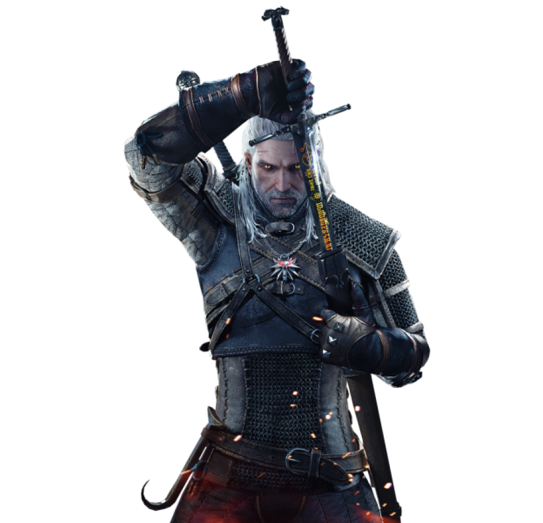
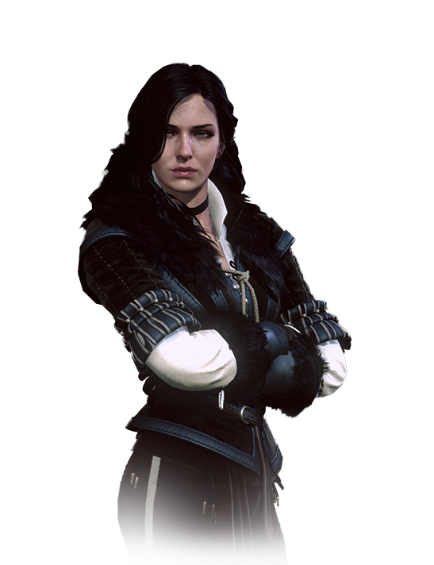
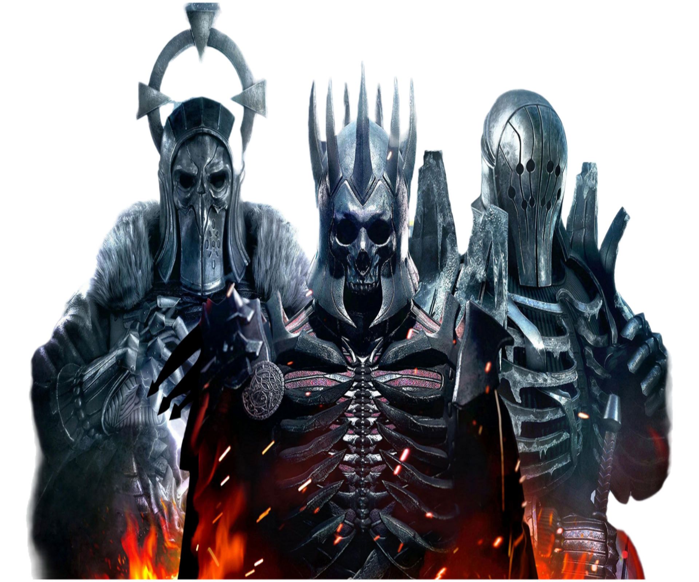

Geralt de Rivia fue un legendario brujo de la Escuela del Lobo, activo durante el siglo XIII. Amaba a la hechicera Yennefer, a pesar de su tumultuosa relación, y era el padre adoptivo de Ciri. Como todos los brujos, Geralt era un cazador de monstruos a sueldo. Poseía habilidades sobrehumanas y era un maestro espadachín. Durante la Prueba de las Hierbas, Geralt exhibió una tolerancia inusual a los mutágenos que concedían a los brujos sus habilidades. Por lo tanto, Geralt fue expuesto a otros experimentos más fuertes, que le concedieron el pelo blanco, dándole mayor velocidad, fuerza y resistencia que sus compañeros brujos.


Cirilla Fiona Elen Riannon, mejor conocida como Ciri, nació en 1252 o 1253,probablemente durante la fiesta de Belleteyn.Era la princesa de Cintra, la hija de Pavetta y Emhyr var Emreis (quien en ese momento usaba el alias "Duny"), y la nieta de la reina Calanthe. Después de que Geralt de Rivia deshizo la maldición de Duny, el brujo pidió como recompensa el hijo que Pavetta estaba esperando de él, pero que él mismo no esperaba, aplicando la Ley de la Sorpresa. Seis años después del nacimiento, Geralt volvió a Cintra a por ella, pero no se la llevó a Kaer Morhen, de hecho ni siquiera la miró. La reina no le entregó ninguna información, ni el género del niño, ni su nombre. Esta niña era Ciri.
Yennefer, nacida en la fiesta de Belleteyn de 1173,fue una hechicera que vivió en Vengerberg, la capital de Aedirn. Era el verdadero amor de Geralt de Rivia y una figura materna para Ciri, a quien veía como una hija hasta el punto en que hizo todo lo posible para rescatar a la niña y evitar que sufriera daños. Solía ser consejera del rey Demavend III de Aedirn y era amiga de Triss Merigold. Era la miembro más joven del Consejo Supremo de Hechiceros dentro de la Hermandad de los Hechiceros. Tras la desintegración de este, la nueva Logia de Hechiceras intentó reclutarla pero no lo lograron, ya que la Logia quería usar a Ciri en sus planes.

